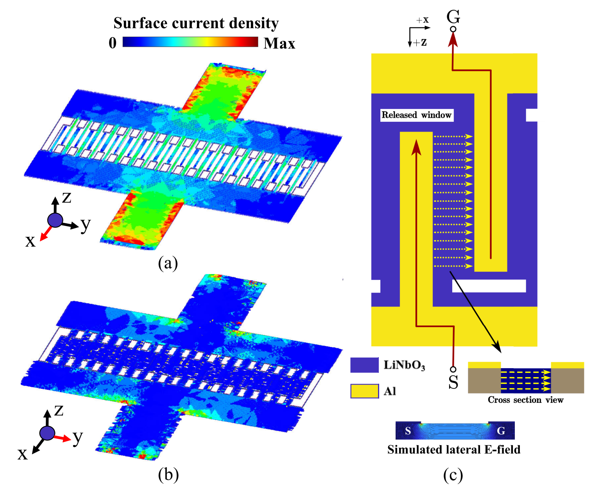
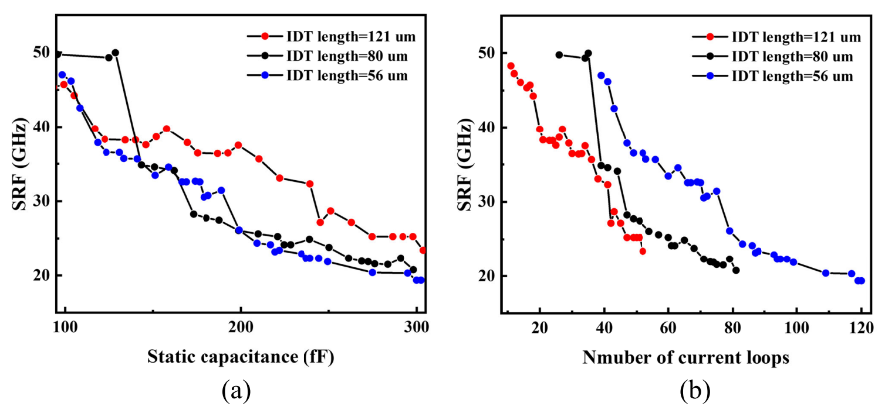
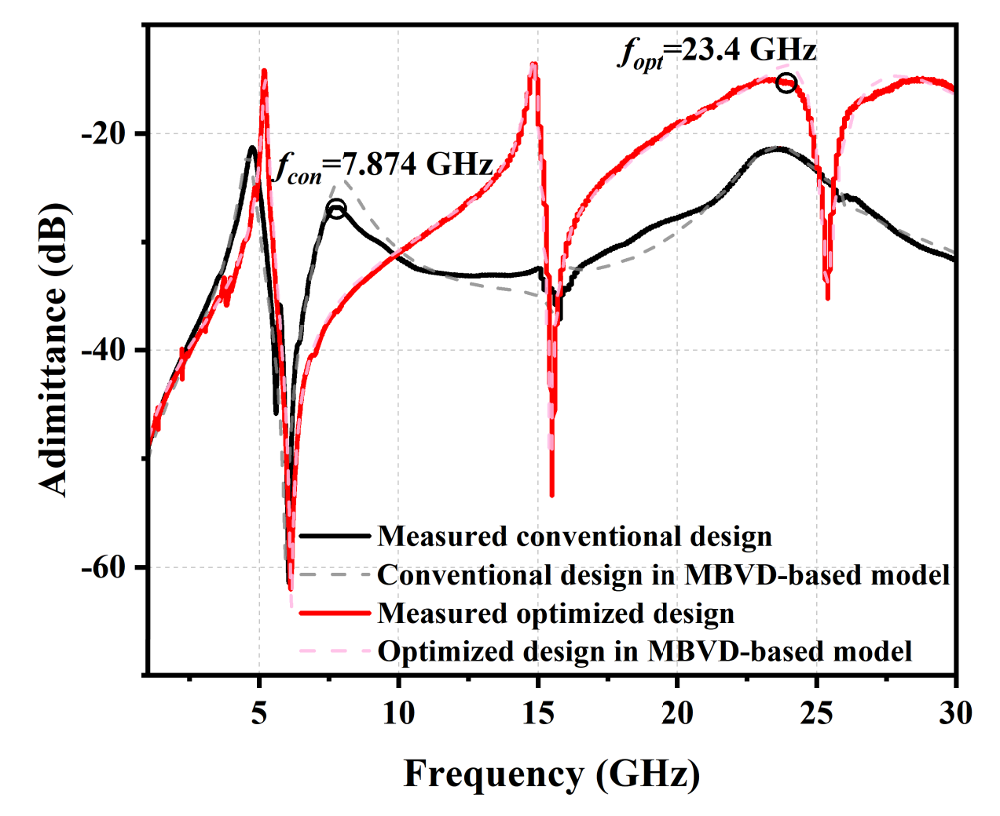

保留电容，降低自感：IDT 如何迈向毫米波
从电流路径理解声学谐振器的电磁自谐振
设计一个高频声学谐振器时，我们通常首先关注压电薄膜的厚度、材料和振动模态：怎样把声学谐振推向更高频率，同时保留足够的机电耦合？但当器件面向毫米波应用时，还有一部分结构需要重新审视——用来激发声波的金属电极。
叉指换能器（interdigital transducer，IDT）由两组交错排列的电极组成。它通过电场激发压电薄膜振动，同时也构成一个真实的高频电路。电极之间存在电容，电流路径产生自感，二者能够形成电磁自谐振。如果这个响应靠近我们需要的声学模态，器件的导纳谱和品质因数都会受到影响。
本文以我们发表在 IEEE TUFFC 的 Scale Interdigital Transducer-Based Microacoustic Resonators Into mmWave Applications 为例，解释如何在保留静态电容的条件下，利用电流路径分析和等效电路建模降低自感。论文在 300 fF 器件组中，将电磁自谐振频率从 7.874 GHz 提高到 23.4 GHz；另一个 130 fF 器件组则将它推至约 50 GHz 的测量频段边缘。[1] 理解这些数字，需要先分清声学谐振与电磁自谐振各自意味着什么。
1. 同一组电极，为什么会有两种谐振
在压电谐振器中，声学谐振对应薄膜中的机械振动，通过压电效应被电端口激发和读出。以论文研究的 LiNbO₃ 薄膜为例，不同阶次的 Lamb 波模态提供了不同的声学响应。电磁自谐振则来自电极和互连的电学特性，即使先不考虑机械振动，这部分电路也可能发生谐振。[1, Sections I–II]
最简单的教学模型，是在一个电容前串联电感。忽略损耗和其他寄生支路时，其阻抗虚部由两项竞争决定：电感的感抗随频率增大，电容的容抗随频率减小。两者相抵消时，出现电磁自谐振。
在这个模型里，自谐振以下的电路呈电容性，自谐振以上转为电感性。真实 IDT 的响应还包含声学支路、馈通和多个寄生路径，因此不能用单个 LC 模型拟合所有峰谷；但它已经说明，原本用来激发声波的电极本身也可能改变器件的高频行为。
例如，假设 C = 300 fF、L = 0.5 nH，按上述公式得到的自谐振频率约为 13.0 GHz。保持电容不变，将电感降至 0.125 nH，频率便提高到约 26.0 GHz。电感减少到四分之一，自谐振频率提高到两倍。这是为理解比例关系构造的数值例子，不是论文中的器件拟合结果。
因此，将电磁自谐振移到更高频率，并不意味着声学模态的频率同时提高。论文中的约 50 GHz 结果描述的是电磁自谐振的位置，不能直接解读成一个在 50 GHz 工作的声学谐振器。
2. 为什么不能只把电容做小
从 LC 公式看，减小电容同样能够提高自谐振频率。然而，静态电容 C₀ 本来就是器件与外部射频电路之间的重要设计参数。论文面向 50 Ω 系统，强调优化自感时需要保留阻抗匹配所需的静态电容。[1, Sections I–II-A]
仍用一个理想电容的教学例子：在 20 GHz，300 fF 电容的容抗幅值约为 26.5 Ω；若把电容减至 75 fF，容抗幅值便增至约 106 Ω。这样的变化会改变器件的电学负载。这里的容抗计算只用于说明电容量的影响，完整谐振器的匹配仍取决于声学支路、连接方式和外部网络，不能由这两个数字直接判断。
这项工作的设计约束由此变得具体：首先确定系统需要的 C₀，再寻找能降低等效自感的电极布局。比较两个方案时，保留相同的电容目标，才能看清自谐振改善究竟来自电流路径的优化，还是来自负载条件的改变。
3. 沿着电流走一遍，寻找自感从哪里来
电感与电流形成的磁场有关。分析 IDT 时，如果只把每根金属指条看成一个孤立元件，就容易遗漏它与汇流条、馈线和返回路径共同组成的回路。论文通过电磁仿真观察电流分布，再据此分析不同几何参数对自感的影响。[1, Section II-D]

图 1｜论文原 Fig. 9，p. 679。(a)、(b) 展示不同方向的表面电流密度，(c) 示意一对金属指条及其周围的电流路径。保留全部子图、箭头、色标及标签，裁去周围正文并另写中文图注。来源：Liu, Zheng, and Yang, IEEE TUFFC 72(5), 2025，DOI: 10.1109/TUFFC.2025.3554004，© 2025 IEEE。窄屏可横向滚动或点击查看大图。
阅读图 1 时，可以从一侧端口出发，沿馈线进入汇流条，再进入指条区域。电极间的时变电场对应位移电流，使整个交流回路能够闭合。这里不需要假设电子直接穿过绝缘的 LiNbO₃；导体中的传导电流与介质中的位移电流共同构成电磁分析中的电流连续性。
论文据此考察馈线长度、汇流条几何、指条长度、金属化比例，以及指条末端与对侧汇流条之间的间距等参数。减少不必要的电流路径长度、改善结构不连续处，是其中的设计方向。[1, Sections II-E–III] 这些参数共同影响电场、磁场和电容，实际效果需要在完整布局中判断。
4. 电极越短越好吗：固定电容下的一个反例
如果一条电流路径较长，尝试缩短它是合理的。但当 C₀ 必须保持不变时，局部缩短常常需要由其他尺寸的增加来补偿。IDT 指条长度与指条数量之间的关系，就是一个直观的例子。
在其他截面条件近似不变、忽略端部效应的简化情况下，论文的电容表达式包含 (N − 1)a 这一项：N 是指条数，a 是有效指条长度。[1, Eq. (1)] 因而可以用“有效间隙数量 × 重叠长度”粗略理解电容的累积。假设把 a 减半，为保持相近电容，就需要让有效间隙数量大约加倍。这个比例只是教学近似；实际设计还要考虑间距、金属化比例和边缘电场。
这时，指条里的路径虽然缩短了，容纳更多指条的汇流条却可能变长。两个变化对电磁响应的影响会相互竞争。尤其在较大的电容目标下，补偿所需的汇流条长度可能成为限制，因此不能从一根指条的长度直接推断整个器件的自感。

图 2｜论文原 Fig. 16，p. 682。(a) 横轴为静态电容，(b) 横轴为电流回路数；不同颜色表示不同 IDT 长度。应在相同横轴条件下比较曲线，分别理解固定电容与固定回路数的设计约束。保留原图两个子图及全部数据、坐标和图例；来源与版权同图 1。
图 2 将这两种比较条件分开展示。固定回路数时，缩短指条可以提高自谐振频率；固定电容时，则需要同时考虑为补偿电容而改变的汇流条长度，趋势可能随电容目标变化。这正是约束条件影响设计结论的具体例子：优化一个尺寸时，需要把随之改变的电流路径一起纳入分析。
5. 等效电路为什么还要考虑测量端口
要把上述几何变化与测得的导纳谱联系起来，需要一个能够区分声学响应与电磁寄生的模型。论文以改进的 Butterworth–Van Dyke（MBVD）模型为基础：动支路中的 Rₘ、Lₘ、Cₘ 描述声学模态，静态电容和附加电感、电阻及馈通支路则描述电极与测量结构的电学行为。[1, Figs. 4–5]
其中一个值得注意的细节，是端口和焊盘布局也会影响自谐振。论文分别建立 G–S 与 G–S–G 配置下的模型，并计入相应的寄生支路。在一组 C₀ = 130 fF 的仿真比较中，两种配置的自谐振频率分别为 28.69 GHz 和 15.32 GHz。[1, Fig. 7] 这组数字来自指定布局的仿真，并不表示某一种探针在所有器件上都会带来固定幅度的变化。
它所说明的是：测量端口所见的电磁响应，由器件及其接入结构共同决定。比较设计或提取参数时，需要说明端口定义、焊盘和寄生路径；把这些条件保持一致，才能合理解释自谐振位置的变化。对于宽频范围内出现的多个电磁谐振，论文进一步使用多支路等效电路，而不是让一个额外电感承担全部拟合任务。
6. 从原始测量曲线看，优化到底改变了什么
论文在 350 nm 厚的 Y-128° 切 LiNbO₃ 薄膜上制备器件，并在室温、干燥空气条件下完成测量。[1, Section III] 两组电容目标提供了不同设计条件下的验证。其中，300 fF 组的前后对比如图 3 所示。

图 3｜论文原 Fig. 19，p. 683。黑色和红色实线分别为常规与优化设计的测量响应，虚线为对应模型。标记的 7.874 GHz 与 23.4 GHz 是电磁自谐振频率。原图完整提取，未改变曲线、坐标或图例；来源与版权同图 1。
读图时，可以先定位两条较宽的电磁响应峰，再观察它们周围较尖锐的声学特征。优化后，电磁自谐振由 7.874 GHz 移到 23.4 GHz，约为原来的 2.97 倍。与此同时，论文报告这一组器件的 A1 模态串联品质因数（series Q）从 9.794 增至 35.76，约为原来的 3.65 倍。[1, pp. 683–684] 这些变化表明，改善电磁寄生能够改善所观察到的声学模态表现；它们不能直接证明压电材料的本征机械损耗也按同样比例下降。
另一个 C₀ = 130 fF 器件组逐步调整几何参数，把电磁自谐振从 12.13 GHz 推至约 50 GHz。[1, Fig. 18] 对这个结果需要保留原图中的测量边界：最终子图标注实测自谐振高于 50 GHz，仿真值为 51.1477 GHz。因此，51.1477 GHz 不能作为精确实测值引用。两组实验共同支持的是，在所研究的器件结构和电容目标下，可以通过布局优化显著推高电磁自谐振。
7. 把这个方法带回自己的器件设计
对于希望使用高阶 Lamb 波模态的设计者，这篇论文提供了一条可操作的分析顺序：先根据系统需求确定电容目标与声学工作频段，再检查该布局及其端口配置下的电磁自谐振位置。如果电磁响应已经靠近目标模态，就沿着电流回路寻找可调整的路径，并在保持电容约束的条件下比较新方案。
每次修改几何结构之后，电磁仿真、声学性能和测量响应都需要重新对照。缩短馈线可能有效，调整指条长度也可能有效，但某一项参数的局部趋势不足以代替完整器件的验证。换用不同薄膜、金属厚度、封装或返回路径时，也需要重新检查这些关系。
这项工作的启发在于，电极布局提供了声学模态选择之外的一组设计自由度。理解电流怎样进入指条、怎样经过汇流条以及怎样返回端口，才能在保留所需电容的同时，为高频声学响应创造更合适的电磁环境。
参考文献与图像来源
[1] X. Liu, J. Zheng, and Y. Yang, “Scale Interdigital Transducer-Based Microacoustic Resonators Into mmWave Applications,” IEEE Transactions on Ultrasonics, Ferroelectrics, and Frequency Control, vol. 72, no. 5, pp. 674–685, May 2025. DOI: 10.1109/TUFFC.2025.3554004。IEEE 论文页面。
本文是作者对已发表研究的教学解读。原 Fig. 9、Fig. 16 与 Fig. 19 的版权为 © 2025 IEEE；此处提取完整图形区域并另写中文图注，未修改图内科学内容。本文未对原图赋予新的开放许可。LC 数值、理想电容容抗和指条数量比例均为教学构造，不是新增实验数据。